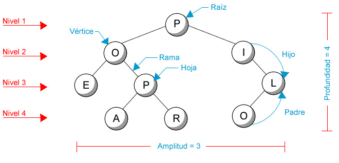
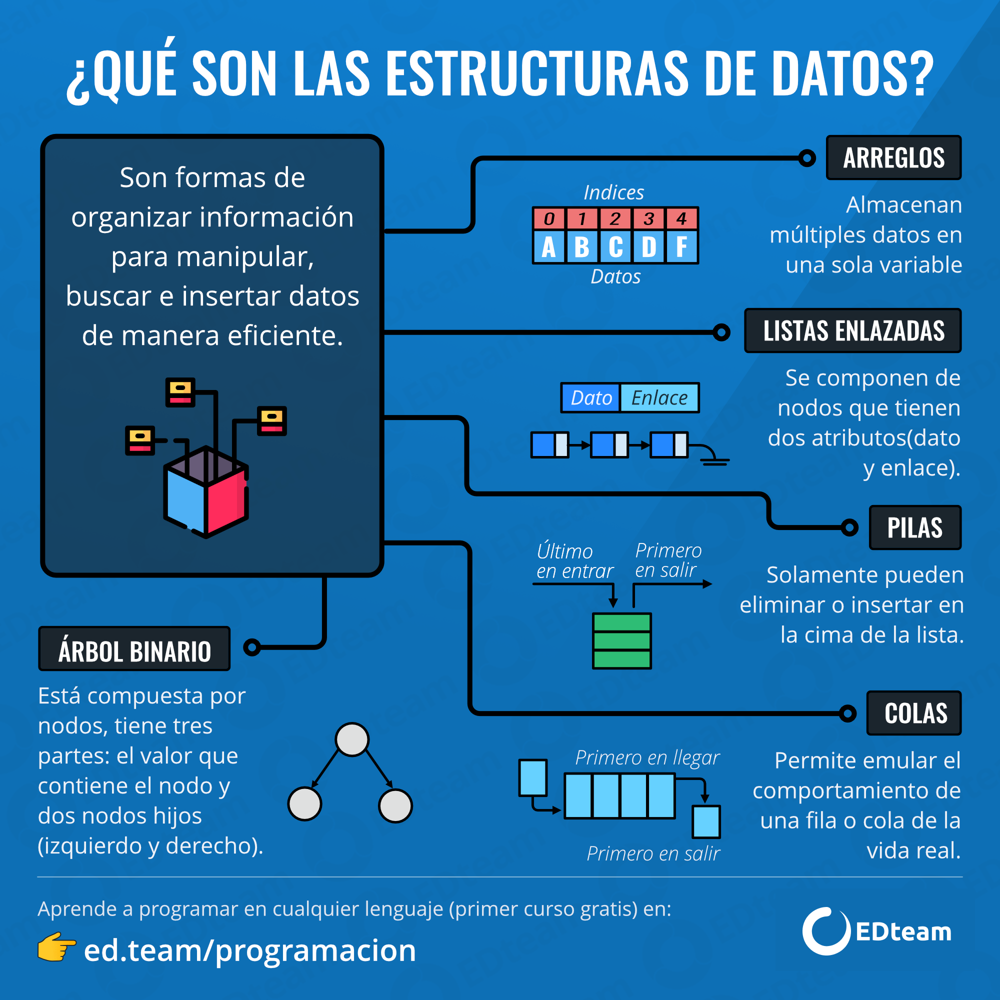

SEGUIR ESTUDIANDO...


Los árboles son estructuras de datos jerárquicas que se utilizan ampliamente en informática y matemáticas. Son representaciones visuales de relaciones jerárquicas entre elementos, y su estructura se compone de nodos conectados por aristas. Exploraremos a fondo los conceptos clave de los árboles, su estructura, aplicaciones y un vistazo a su relevancia histórica.
Los árboles son conjuntos de nodos conectados por aristas, donde cada nodo tiene un padre
(excepto el nodo superior) y cero o más hijos. Algunos términos fundamentales incluyen:
Raiz: El nodo superior del árbol.
Nodo: Un elemento individual en el árbol.
Arista: La conexión entre dos nodos.
Hijo: Un nodo directamente conectado a otro nodo.
Padre: Un nodo que tiene uno o más nodos conectados como hijos.

Árbol Binario: Cada nodo tiene a lo sumo dos hijos: izquierdo y derecho.
Árbol de Búsqueda Binaria (BST): Un tipo especial de árbol binario donde los nodos
izquierdos son menores y los nodos derechos son mayores que el nodo padre.
Árbol N-ario: Cada nodo puede tener más de dos hijos.
Estructuras de Datos: Los árboles se utilizan en estructuras de datos como árboles de búsqueda
y montículos.
Organización de Datos: Se aplican en la organización de datos jerárquicos, como sistemas de archivos.
Análisis de Algoritmos: En algoritmos de búsqueda y recorrido de datos.
Estructuras de Representación en Computación Gráfica: Para representar relaciones
jerárquicas en objetos y escenas.

El concepto de árboles en informática tiene raíces en la década de 1960, cuando se comenzaron a
utilizar en la teoría de grafos y en la representación de estructuras de datos jerárquicas.
En 1962, Edward F. Moore introdujo el término "árbol" en el contexto de teoría de grafos.
esde entonces, los árboles se han convertido en una parte integral de la teoría de la
computación y la programación, desempeñando un papel crucial en el diseño eficiente de algoritmos
y la organización de datos.